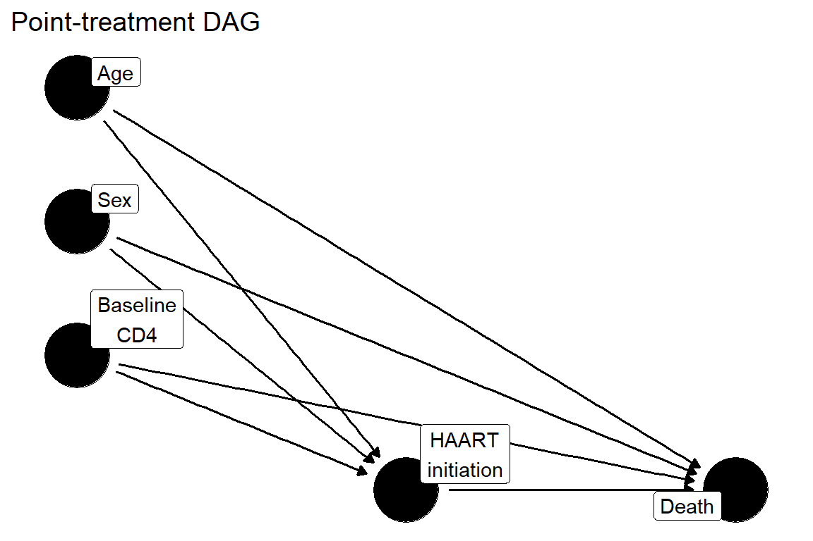

library(ipw)
library(tidyverse)
data(haartdat)2 Running Case Study: Antiretroviral Therapy, HIV Progression, and Longitudinal Confounding
Estimated reading time: 30 minutes
Throughout this handbook, we use a single recurring example to illustrate causal concepts, estimation methods, and diagnostic tools: the longitudinal HIV antiretroviral therapy cohort example used in the marginal structural model literature (Van der Wal & Geskus, 2011). Using one example across all chapters lets you see how the same data look different through the lens of each method, and makes it easier to compare approaches.
2.1 Clinical and epidemiologic motivation
In the early years of combination antiretroviral therapy, commonly referred to as HAART (highly active antiretroviral therapy), a central clinical question was: does initiating HAART reduce mortality among HIV-positive patients, and if so, by how much?
This question sounds straightforward, but answering it from observational data is not. In clinical practice, physicians do not assign HAART randomly. Instead, they initiate therapy in response to declining CD4 cell counts and worsening clinical status. A patient whose immune function is deteriorating rapidly is more likely to start HAART, while a patient with stable, high CD4 counts may have treatment deferred. The very biomarkers that predict death also determine who gets treated and when.
The problem runs deeper than simple confounding. HAART, once initiated, can itself improve CD4 counts. This means that a patient’s CD4 level at any given time point reflects both their underlying disease trajectory and the effects of any prior treatment they received. CD4 count is simultaneously a confounder (it predicts both future treatment decisions and mortality) and a mediator (it lies on the causal pathway from treatment to outcome). This creates a tangle of confounding that standard regression cannot unravel.
This is exactly the setting where naive regression can fail and where the causal roadmap and longitudinal g-methods become necessary. If we ignore time-varying CD4, we leave confounding unaddressed. If we adjust for time-varying CD4 in a standard regression, we block part of the treatment’s beneficial effect. No conventional regression model can simultaneously address both problems. The methods introduced in this handbook, including inverse probability weighting with marginal structural models, g-computation, and longitudinal TMLE, were developed precisely for settings like this one.
The dataset we use throughout the handbook is a simulated cohort of 1,200 HIV-positive patients that captures these features. It was designed to reflect the structure of real HIV cohort studies while providing a controlled setting where the true data-generating process is known, allowing us to compare estimation methods and understand why simpler approaches fail.
2.2 Why this example is ideal for the tutorial
This cohort illustrates essentially every complication that motivates modern causal inference:
Confounding by indication. Sicker patients (lower CD4 counts) are more likely to start HAART. A naive comparison of treated vs. untreated patients conflates the drug’s benefit with the fact that treated patients were sicker to begin with.
Time-varying confounding. CD4 counts change over time and are measured at each visit. They influence the decision to start treatment and independently predict mortality. A single baseline measurement cannot capture this evolving relationship.
Treatment-confounder feedback. This is the critical complication. CD4 count at time \(t\) is affected by prior HAART use (treatment improves CD4), and CD4 at time \(t\) also affects whether HAART is initiated or continued at time \(t+1\). This feedback loop means that adjusting for time-updated CD4 in a regression blocks part of the treatment effect (overadjustment bias), while not adjusting for time-updated CD4 leaves confounding unaddressed. Standard regression cannot do both correctly.
The need to define a target trial before choosing an estimator. Without a clear specification of the causal question (who is eligible, when does follow-up start, what treatment strategies are being compared), it is easy to produce estimates that do not answer a well-defined scientific question.
Why crude and standard adjusted analyses can be misleading. Because of treatment-confounder feedback, no conventional regression model with time-varying covariates correctly estimates the causal effect of HAART. This makes the example a concrete demonstration of why the methods in this handbook exist.
Why IPTW, MSMs, and longitudinal TMLE are needed. The marginal structural model literature developed around exactly this type of problem. The dataset connects directly to that methodological tradition, making it a natural bridge between theory and practice.
2.3 The observed data
The dataset is distributed as haartdat in the ipw R package (Van der Wal & Geskus, 2011). It contains 1,200 simulated HIV-positive patients observed from HIV seroconversion. Follow-up is divided into 100-day intervals using person-period (long) format. Each row represents one patient-interval, so a patient observed for 2,000 days contributes approximately 20 rows.
2.3.1 Structure
dim(haartdat)
#> [1] 19175 10
names(haartdat)
#> [1] "patient" "tstart" "fuptime" "haartind" "event" "sex"
#> [7] "age" "cd4.sqrt" "endtime" "dropout"
glimpse(haartdat)
#> Rows: 19,175
#> Columns: 10
#> $ patient <int> 1, 1, 1, 1, 1, 1, 1, 1, 1, 1, 1, 1, 1, 1, 1, 1, 1, 1, 1, 1, 1…
#> $ tstart <dbl> -100, 0, 100, 200, 300, 400, 500, 600, 700, 800, 900, 1000, 1…
#> $ fuptime <dbl> 0, 100, 200, 300, 400, 500, 600, 700, 800, 900, 1000, 1100, 1…
#> $ haartind <dbl> 0, 0, 0, 0, 0, 0, 0, 1, 1, 1, 1, 1, 1, 1, 1, 1, 1, 1, 1, 1, 1…
#> $ event <dbl> 0, 0, 0, 0, 0, 0, 0, 0, 0, 0, 0, 0, 0, 0, 0, 0, 0, 0, 0, 0, 0…
#> $ sex <dbl> 1, 1, 1, 1, 1, 1, 1, 1, 1, 1, 1, 1, 1, 1, 1, 1, 1, 1, 1, 1, 1…
#> $ age <dbl> 22, 22, 22, 22, 22, 22, 22, 22, 22, 22, 22, 22, 22, 22, 22, 2…
#> $ cd4.sqrt <dbl> 23.83275, 25.59297, 23.47339, 24.16609, 23.23790, 24.85961, 2…
#> $ endtime <dbl> 2900, 2900, 2900, 2900, 2900, 2900, 2900, 2900, 2900, 2900, 2…
#> $ dropout <dbl> 0, 0, 0, 0, 0, 0, 0, 0, 0, 0, 0, 0, 0, 0, 0, 0, 0, 0, 0, 0, 0…2.3.2 Variable dictionary
The following table summarizes each variable, its interpretation, and its role in the causal analysis.
| Variable | Description | Role |
|---|---|---|
patient |
Patient identifier (1 to 1,200) | Unit of analysis |
tstart |
Start of time interval (days since seroconversion) | Time structure |
fuptime |
End of time interval (days since seroconversion) | Time structure |
haartind |
HAART indicator: 1 if HAART has been initiated by the end of this interval, 0 otherwise | Time-varying treatment (A) |
event |
Death indicator: 1 if patient died during this interval | Outcome (Y) |
sex |
Sex: 0 = male, 1 = female | Baseline confounder (W) |
age |
Age in years at follow-up start | Baseline confounder (W) |
cd4.sqrt |
Square root of CD4 cell count at the end of the interval | Time-varying confounder (L) |
endtime |
Patient’s final observed time (days) | Administrative variable |
dropout |
Censoring indicator: 1 if patient dropped out at interval end | Censoring (C) |
Key features of the data structure:
- Unit of observation. One row per patient per 100-day interval. Patients contribute between 1 and 38 intervals (median approximately 15).
- Follow-up structure. Intervals begin at day \(-100\) (the first interval, from \(-100\) to 0, allows modeling of HAART initiation at time zero). Follow-up extends up to day 3,700.
- Treatment variable.
haartindis an absorbing indicator: once a patient initiates HAART,haartindremains 1 for all subsequent intervals. This represents treatment initiation, not current use. Among the 1,200 patients, 376 (31%) initiate HAART at some point during follow-up. - Outcome.
eventindicates death during the interval. A total of 31 deaths are observed across the cohort, making this a rare-event setting. - Censoring.
dropoutindicates loss to follow-up. Approximately 690 dropout events occur, making informative censoring a real concern. - Baseline covariates.
ageandsexare fixed at baseline. Approximately 77% of patients are male; median age is 33 years. - Time-varying covariate.
cd4.sqrtis the square root of the CD4 cell count, measured at each interval. This is the key time-varying confounder that creates treatment-confounder feedback. - Timing. CD4 is measured before the treatment decision at each interval. Treatment and censoring occur at the end of the interval. This temporal ordering is critical for identification.
2.3.3 Example patient trajectories
Examining individual trajectories helps build intuition for the data structure:
haartdat |>
filter(patient %in% c(1, 5, 10)) |>
select(patient, tstart, fuptime, haartind, cd4.sqrt, event, dropout) |>
knitr::kable(digits = 2,
caption = "Trajectories for three patients"
)| patient | tstart | fuptime | haartind | cd4.sqrt | event | dropout |
|---|---|---|---|---|---|---|
| 1 | -100 | 0 | 0 | 23.83 | 0 | 0 |
| 1 | 0 | 100 | 0 | 25.59 | 0 | 0 |
| 1 | 100 | 200 | 0 | 23.47 | 0 | 0 |
| 1 | 200 | 300 | 0 | 24.17 | 0 | 0 |
| 1 | 300 | 400 | 0 | 23.24 | 0 | 0 |
| 1 | 400 | 500 | 0 | 24.86 | 0 | 0 |
| 1 | 500 | 600 | 0 | 25.94 | 0 | 0 |
| 1 | 600 | 700 | 1 | 26.04 | 0 | 0 |
| 1 | 700 | 800 | 1 | 26.72 | 0 | 0 |
| 1 | 800 | 900 | 1 | 27.48 | 0 | 0 |
| 1 | 900 | 1000 | 1 | 23.87 | 0 | 0 |
| 1 | 1000 | 1100 | 1 | 28.30 | 0 | 0 |
| 1 | 1100 | 1200 | 1 | 25.73 | 0 | 0 |
| 1 | 1200 | 1300 | 1 | 22.63 | 0 | 0 |
| 1 | 1300 | 1400 | 1 | 30.17 | 0 | 0 |
| 1 | 1400 | 1500 | 1 | 23.04 | 0 | 0 |
| 1 | 1500 | 1600 | 1 | 25.10 | 0 | 0 |
| 1 | 1600 | 1700 | 1 | 23.62 | 0 | 0 |
| 1 | 1700 | 1800 | 1 | 23.49 | 0 | 0 |
| 1 | 1800 | 1900 | 1 | 26.57 | 0 | 0 |
| 1 | 1900 | 2000 | 1 | 28.48 | 0 | 0 |
| 1 | 2000 | 2100 | 1 | 20.59 | 0 | 0 |
| 1 | 2100 | 2200 | 1 | 23.87 | 0 | 0 |
| 1 | 2200 | 2300 | 1 | 25.53 | 0 | 0 |
| 1 | 2300 | 2400 | 1 | 22.56 | 0 | 0 |
| 1 | 2400 | 2500 | 1 | 21.93 | 0 | 0 |
| 1 | 2500 | 2600 | 1 | 28.23 | 0 | 0 |
| 1 | 2600 | 2700 | 1 | 21.98 | 0 | 0 |
| 1 | 2700 | 2800 | 1 | 22.85 | 0 | 0 |
| 1 | 2800 | 2900 | 1 | 26.85 | 0 | 1 |
| 5 | -100 | 0 | 0 | 18.95 | 0 | 0 |
| 5 | 0 | 100 | 0 | 20.49 | 0 | 0 |
| 5 | 100 | 200 | 0 | 15.87 | 0 | 0 |
| 5 | 200 | 300 | 0 | 19.42 | 0 | 0 |
| 5 | 300 | 400 | 0 | 18.49 | 0 | 0 |
| 5 | 400 | 500 | 0 | 17.66 | 0 | 0 |
| 5 | 500 | 600 | 0 | 18.92 | 0 | 0 |
| 5 | 600 | 700 | 0 | 19.80 | 0 | 0 |
| 5 | 700 | 800 | 0 | 24.08 | 0 | 0 |
| 5 | 800 | 900 | 1 | 21.63 | 0 | 0 |
| 5 | 900 | 1000 | 1 | 23.54 | 0 | 0 |
| 5 | 1000 | 1100 | 1 | 21.31 | 0 | 0 |
| 5 | 1100 | 1200 | 1 | 24.08 | 0 | 0 |
| 5 | 1200 | 1300 | 1 | 23.69 | 0 | 1 |
| 10 | -100 | 0 | 0 | 16.22 | 0 | 0 |
| 10 | 0 | 100 | 0 | 18.73 | 0 | 0 |
| 10 | 100 | 200 | 1 | 14.42 | 0 | 0 |
| 10 | 200 | 300 | 1 | 17.89 | 0 | 0 |
| 10 | 300 | 400 | 1 | 17.97 | 0 | 0 |
| 10 | 400 | 500 | 1 | 16.94 | 0 | 0 |
| 10 | 500 | 600 | 1 | 17.06 | 0 | 0 |
| 10 | 600 | 700 | 1 | 18.38 | 0 | 0 |
| 10 | 700 | 800 | 1 | 20.00 | 0 | 0 |
| 10 | 800 | 900 | 1 | 14.70 | 0 | 0 |
| 10 | 900 | 1000 | 1 | 15.68 | 0 | 0 |
| 10 | 1000 | 1100 | 1 | 18.60 | 0 | 0 |
| 10 | 1100 | 1200 | 1 | 15.87 | 0 | 0 |
| 10 | 1200 | 1300 | 1 | 15.91 | 0 | 0 |
| 10 | 1300 | 1400 | 1 | 16.16 | 0 | 0 |
| 10 | 1400 | 1500 | 1 | 14.59 | 0 | 0 |
| 10 | 1500 | 1600 | 1 | 18.81 | 0 | 0 |
| 10 | 1600 | 1700 | 1 | 14.04 | 0 | 0 |
| 10 | 1700 | 1800 | 1 | 16.12 | 0 | 0 |
| 10 | 1800 | 1900 | 1 | 15.17 | 0 | 0 |
| 10 | 1900 | 2000 | 1 | 14.11 | 0 | 0 |
| 10 | 2000 | 2100 | 1 | 14.56 | 0 | 0 |
| 10 | 2100 | 2200 | 1 | 15.68 | 0 | 0 |
| 10 | 2200 | 2300 | 1 | 13.45 | 0 | 0 |
| 10 | 2300 | 2400 | 1 | 12.77 | 0 | 0 |
| 10 | 2400 | 2500 | 1 | 15.30 | 0 | 0 |
| 10 | 2500 | 2600 | 1 | 13.23 | 0 | 0 |
| 10 | 2600 | 2700 | 1 | 13.60 | 0 | 0 |
| 10 | 2700 | 2800 | 1 | 10.58 | 0 | 0 |
| 10 | 2800 | 2900 | 1 | 11.00 | 0 | 1 |
Notice that Patient 1 initiates HAART at day 600 (the interval ending at 700) and remains on treatment for all subsequent intervals. Patient 5 initiates later, at day 800. CD4 counts fluctuate over time for all patients. This is the longitudinal, time-varying structure that makes causal inference challenging and interesting.
2.3.4 Cohort summary
We also create a simplified baseline snapshot for chapters that use point-treatment examples:
# Baseline snapshot: one row per patient
haart_baseline <- haartdat |>
group_by(patient) |>
summarise(
sex = first(sex),
age = first(age),
cd4_baseline = first(cd4.sqrt)^2,
cd4_sqrt_baseline = first(cd4.sqrt),
ever_haart = max(haartind),
died = max(event),
dropout = max(dropout),
total_fup_days = max(fuptime),
.groups = "drop"
)
haart_baseline |>
summarise(
n = n(),
pct_female = mean(sex) * 100,
median_age = median(age),
median_cd4 = median(cd4_baseline),
pct_ever_haart = mean(ever_haart) * 100,
pct_died = mean(died) * 100,
pct_dropout = mean(dropout) * 100
) |>
knitr::kable(digits = 1, caption = "Baseline cohort summary")| n | pct_female | median_age | median_cd4 | pct_ever_haart | pct_died | pct_dropout |
|---|---|---|---|---|---|---|
| 1200 | 20.8 | 33 | 511.5 | 31.3 | 2.6 | 57.5 |
2.4 The causal question
The primary causal question for this handbook is:
Among HIV-positive individuals under longitudinal follow-up from seroconversion, what would the risk of death have been under a strategy of initiating HAART when clinically indicated, compared with a strategy of deferring or not initiating HAART?
This is a question about a sustained treatment strategy, not simply a comparison of treated and untreated individuals at a single time point. Patients in the cohort initiate HAART at different times (or not at all), and the question asks what would have happened if we could have intervened on this process.
It is important to distinguish this causal question from the naive associational question. The associational question asks: among patients who happened to initiate HAART, was mortality different from those who did not? This comparison is confounded because sicker patients are more likely to start treatment. The causal question asks what would happen if we could assign treatment strategies to everyone, removing the influence of confounding factors on the treatment decision. Answering the causal question requires the identification assumptions and estimation methods developed throughout this handbook.
2.5 The target trial we wish we could run
To make the causal question precise, we specify the randomized trial we would ideally like to conduct. This target trial protocol serves as a design template that the observational analysis will attempt to emulate.
Target trial protocol
| Component | Specification |
|---|---|
| Eligibility | HIV-positive adults at the time of seroconversion, antiretroviral-naive |
| Time zero | Date of HIV seroconversion |
| Treatment strategies | (1) Initiate HAART according to clinical guidelines during follow-up vs. (2) defer HAART initiation throughout follow-up |
| Assignment | Random assignment to one of the two strategies at time zero |
| Outcome | All-cause mortality |
| Follow-up | From seroconversion until death, dropout, or administrative end of study (up to 3,700 days) |
| Causal contrast | Risk difference in mortality at a specified time horizon |
| Analysis | Intention-to-treat or per-protocol, depending on the question |
Starting with the target trial helps in several ways. First, it forces us to define the causal question precisely before choosing any statistical method. Second, it makes the assumptions of the analysis transparent: we are asking what would have happened under specific, well-defined treatment strategies, not just whether treated and untreated patients have different outcomes. Third, it highlights where the observational data fall short of the ideal trial. In the observed data, treatment is not randomly assigned; instead, it is determined by evolving clinical status. The causal roadmap provides the framework for bridging from this ideal trial to the data we actually have, using identification assumptions and appropriate estimators.
2.6 The observed data and causal structure
2.6.1 A simplified DAG for point-treatment chapters
For the early chapters of this handbook (g-computation, IPTW, TMLE), we work with a point-treatment simplification where treatment is defined as “ever initiated HAART during follow-up” and confounders are measured at baseline. The following DAG captures this simplified structure:
library(dagitty)
library(ggdag)
simple_dag <- dagify(
A ~ W_age + W_sex + W_cd4,
Y ~ A + W_age + W_sex + W_cd4,
exposure = "A",
outcome = "Y",
coords = list(
x = c(W_age = 0, W_sex = 0, W_cd4 = 0, A = 1, Y = 2),
y = c(W_age = 1.5, W_sex = 1, W_cd4 = 0.5, A = 0, Y = 0)
),
labels = c(
W_age = "Age", W_sex = "Sex", W_cd4 = "Baseline\nCD4",
A = "HAART\ninitiation", Y = "Death"
)
)
ggdag(simple_dag, text = FALSE, use_labels = "label") +
theme_dag() +
labs(title = "Point-treatment DAG")
In this simplified view, the baseline confounders (age, sex, baseline CD4 count) each affect both the probability of initiating HAART and the risk of death. Under the assumptions of consistency, exchangeability (conditional on these baseline confounders), and positivity, the causal effect of HAART initiation on mortality is identified by the g-computation formula.
2.6.2 The longitudinal DAG: treatment-confounder feedback
The real complexity of this example becomes apparent when we consider the longitudinal structure. The following DAG shows two time slices and illustrates the treatment-confounder feedback loop:
long_dag <- dagify(
L1 ~ W,
A1 ~ L1 + W,
L2 ~ A1 + L1 + W,
A2 ~ L2 + A1 + W,
Y ~ A2 + A1 + L2 + L1 + W,
C ~ L2 + A1 + W,
exposure = "A1",
outcome = "Y",
coords = list(
x = c(W = 0, L1 = 1, A1 = 2, L2 = 3, A2 = 4, Y = 5.5, C = 4.5),
y = c(W = 1, L1 = 1, A1 = 0, L2 = 1, A2 = 0, Y = 0, C = 1.5)
),
labels = c(
W = "Baseline\n(age, sex)",
L1 = "CD4(t)",
A1 = "HAART(t)",
L2 = "CD4(t+1)",
A2 = "HAART(t+1)",
Y = "Death",
C = "Dropout"
)
)
ggdag(long_dag, text = FALSE, use_labels = "label") +
theme_dag() +
labs(title = "Longitudinal DAG with treatment-confounder feedback")
This DAG encodes the following causal relationships:
Baseline confounders (W). Age and sex are fixed at baseline. They affect CD4 levels, treatment decisions, dropout, and mortality at all future time points.
Time-varying confounder (L). The CD4 count (
cd4.sqrt) at each interval serves as a time-varying confounder. It is affected by prior treatment (HAART improves CD4) and also influences future treatment decisions (low CD4 prompts HAART initiation) and mortality (low CD4 increases death risk).Treatment-confounder feedback. The arrow from \(A_1\) (HAART at time \(t\)) to \(L_2\) (CD4 at time \(t+1\)) represents the effect of treatment on the confounder. The arrow from \(L_2\) to \(A_2\) represents the confounder influencing future treatment. This is the hallmark of treatment-confounder feedback: the same variable (CD4) is both a confounder of future treatment and a consequence of past treatment.
Censoring. Dropout (
dropout) may depend on CD4 levels and prior treatment, creating the potential for informative censoring.
Why standard regression fails. If we condition on \(L_2\) (time-varying CD4) in a regression, we block part of the causal pathway from \(A_1\) through \(L_2\) to \(Y\). This removes the indirect benefit of HAART (via improved CD4) from the estimate, leading to attenuation or bias. If we do not condition on \(L_2\), we leave the confounding path \(A_2 \leftarrow L_2 \rightarrow Y\) open. No single regression model can simultaneously block confounding paths and preserve causal pathways when treatment-confounder feedback is present. This is the fundamental motivation for g-methods: g-computation, IPTW with marginal structural models, and longitudinal TMLE.
2.6.3 Mapping the DAG to the observed data
The person-period structure of haartdat maps directly onto this longitudinal DAG:
- Each row corresponds to one time slice in the DAG.
cd4.sqrtat each interval is the time-varying confounder \(L_t\), measured before the treatment decision.haartindat each interval is the treatment decision \(A_t\), occurring at the end of the interval.eventis the outcome \(Y\), observed at the end of the interval.dropoutis the censoring indicator \(C\), also at the end of the interval.ageandsexare the baseline covariates \(W\), fixed across all intervals for a given patient.
The temporal ordering within each interval is: measure CD4 (beginning of interval), then treatment decision and outcome/censoring (end of interval). This ordering, combined with the identification assumptions (sequential exchangeability, consistency, and positivity at each time point), allows the causal effect to be identified using longitudinal g-methods.
2.7 Why naive methods fail in this cohort
Before diving into the methods, it is worth seeing concretely why standard approaches produce misleading results for this dataset. We demonstrate three naive analyses, each of which targets the wrong estimand or introduces bias.
2.7.1 Approach 1: Crude comparison
# Simple treated vs. untreated comparison
haart_baseline |>
group_by(ever_haart) |>
summarise(
n = n(),
deaths = sum(died),
mortality_pct = mean(died) * 100,
.groups = "drop"
) |>
knitr::kable(digits = 1, caption = "Crude mortality by HAART status")| ever_haart | n | deaths | mortality_pct |
|---|---|---|---|
| 0 | 824 | 24 | 2.9 |
| 1 | 376 | 7 | 1.9 |
The crude comparison may show that HAART users have higher mortality. This is confounding by indication: physicians initiate HAART in sicker patients (lower CD4 counts), so the treated group was at higher risk to begin with. Without adjustment, the treatment appears harmful when it may actually be beneficial.
2.7.2 Approach 2: Baseline-adjusted regression
# Logistic regression adjusting only for baseline covariates
naive_mod <- glm(died ~ ever_haart + age + sex + cd4_sqrt_baseline,
family = binomial, data = haart_baseline)
broom::tidy(naive_mod, conf.int = TRUE) |>
knitr::kable(digits = 3, caption = "Baseline-adjusted logistic regression")| term | estimate | std.error | statistic | p.value | conf.low | conf.high |
|---|---|---|---|---|---|---|
| (Intercept) | -4.759 | 1.030 | -4.621 | 0.000 | -6.810 | -2.767 |
| ever_haart | -0.601 | 0.448 | -1.343 | 0.179 | -1.554 | 0.227 |
| age | 0.057 | 0.016 | 3.669 | 0.000 | 0.026 | 0.087 |
| sex | 0.141 | 0.470 | 0.301 | 0.763 | -0.872 | 1.002 |
| cd4_sqrt_baseline | -0.039 | 0.033 | -1.170 | 0.242 | -0.105 | 0.025 |
This improves on the crude comparison by adjusting for baseline confounders, but it still uses a single baseline CD4 measurement. It ignores that CD4 changes over time and that HAART initiation is a time-varying decision. The coefficient is a conditional log-odds ratio, not a marginal causal effect.
2.7.3 Approach 3: Regression conditioning on time-varying CD4
# Pooled logistic regression adjusting for time-varying CD4
naive_tv <- glm(event ~ haartind + cd4.sqrt + age + sex,
family = binomial, data = haartdat)
broom::tidy(naive_tv, conf.int = TRUE) |>
knitr::kable(digits = 3,
caption = "Pooled logistic regression with time-varying CD4 adjustment")| term | estimate | std.error | statistic | p.value | conf.low | conf.high |
|---|---|---|---|---|---|---|
| (Intercept) | -5.868 | 0.974 | -6.027 | 0.000 | -7.824 | -4.006 |
| haartind | -0.213 | 0.431 | -0.495 | 0.621 | -1.136 | 0.579 |
| cd4.sqrt | -0.124 | 0.034 | -3.643 | 0.000 | -0.191 | -0.057 |
| age | 0.057 | 0.015 | 3.770 | 0.000 | 0.027 | 0.086 |
| sex | 0.018 | 0.468 | 0.038 | 0.970 | -0.994 | 0.875 |
This is the most dangerous naive approach. By conditioning on cd4.sqrt (a time-varying confounder affected by prior treatment), this regression:
- Blocks part of the causal pathway. HAART improves CD4, and improved CD4 reduces mortality. Adjusting for post-treatment CD4 removes part of the treatment’s benefit from the estimate.
- Still leaves residual confounding. Even after adjustment, the coefficient conflates the direct effect of HAART with residual confounding through unmeasured time-varying factors.
This is exactly the treatment-confounder feedback problem that standard regression cannot solve. The methods in this handbook (IPTW with marginal structural models, g-computation, longitudinal TMLE) are designed to handle this correctly.
The core lesson
No standard regression model, whether it ignores time-varying confounders or adjusts for them, correctly estimates the causal effect of HAART on mortality. Ignoring time-varying CD4 leaves confounding; adjusting for it blocks part of the treatment effect. This is the fundamental motivation for the g-methods (g-computation, IPTW, TMLE) covered in this handbook.
2.8 How this case study will recur throughout the tutorial
This example will be revisited in every major chapter, each time illustrating a different concept or method. The table below provides a roadmap.
| Chapter | What the reader learns | How the HIV case study is used |
|---|---|---|
| 1.1 Why We Need a Causal Roadmap | Regression coefficients are not causal effects | Naive Cox model for HAART shows estimand mismatch |
| 1.2 The Causal Roadmap | Target trial design, DAGs, identification | Target trial protocol for HAART; DAG with treatment-confounder feedback |
| 2.1 G-Computation | Outcome modeling and standardization | Point-treatment g-computation for HAART effect on mortality |
| 2.2 IPTW | Propensity scores and reweighting | Propensity score model for HAART initiation; stabilized weights |
| 2.3 TMLE | Doubly robust estimation | TMLE applied to the baseline HAART question |
| 2.4 TMLE in Practice | Comparing estimators side by side | Naive, g-comp, IPTW, and TMLE estimates compared |
| 2.5 Super Learner | Flexible nuisance estimation | Why machine learning helps with nonlinear CD4-treatment relationships |
| 3.2 Positivity and Overlap | Propensity score diagnostics | Overlap plots for HAART initiation by baseline CD4 |
| 3.4 Effect Modification | Subgroup treatment effects | CATEs by baseline CD4 level and age |
| 3.5 Advanced Diagnostics | Weight distributions, balance | IPTW weight diagnostics for the HAART cohort |
| 3.7 Longitudinal Confounding | Treatment-confounder feedback | Central motivating example; patient trajectory plots |
| 3.9 Illustrated L-TMLE | Longitudinal TMLE mechanics | Step-by-step L-TMLE on the full person-period data |
| 3.12 Sensitivity Analysis | Robustness to unmeasured confounding | E-values for HAART effect; adherence as unmeasured confounder |
As methods become more advanced, the same dataset reveals new subtleties. By the end of the handbook, you will have seen this example analyzed with naive regression, g-computation, IPTW, TMLE, and longitudinal TMLE, and you will understand exactly why the simpler methods fail and when the more complex methods are needed.
2.9 Sources
- Van der Wal WM, Geskus RB (2011). ipw: An R Package for Inverse Probability Weighting. Journal of Statistical Software 43(13):1-23.
- Robins JM, Hernan MA, Brumback B (2000). Marginal structural models and causal inference in epidemiology. Epidemiology 11(5):550-560.
- Hernan MA, Brumback B, Robins JM (2000). Marginal structural models to estimate the causal effect of zidovudine on the survival of HIV-positive men. Epidemiology 11(5):561-570.
- Hernan MA, Robins JM (2020). Causal Inference: What If. Chapman & Hall/CRC. Free online